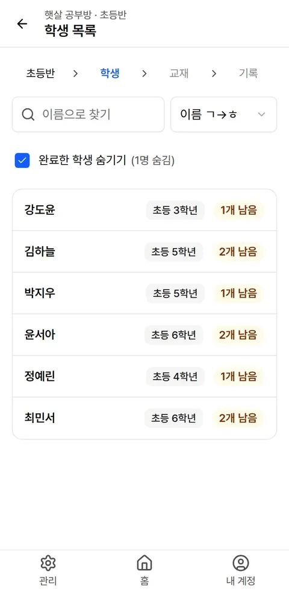
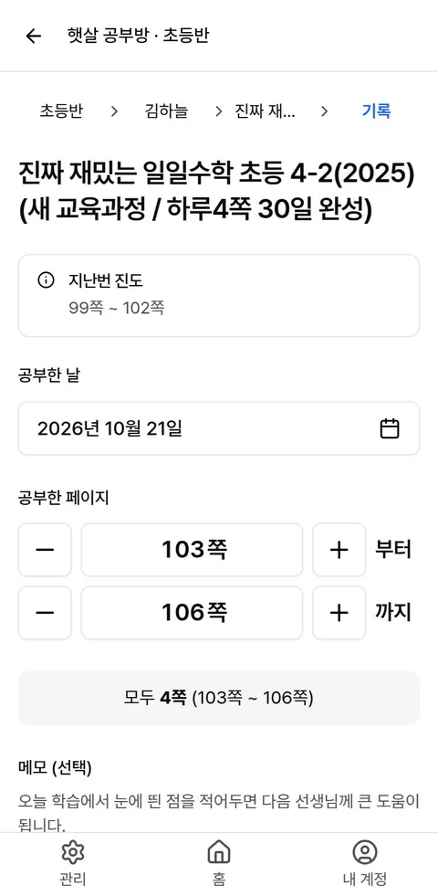
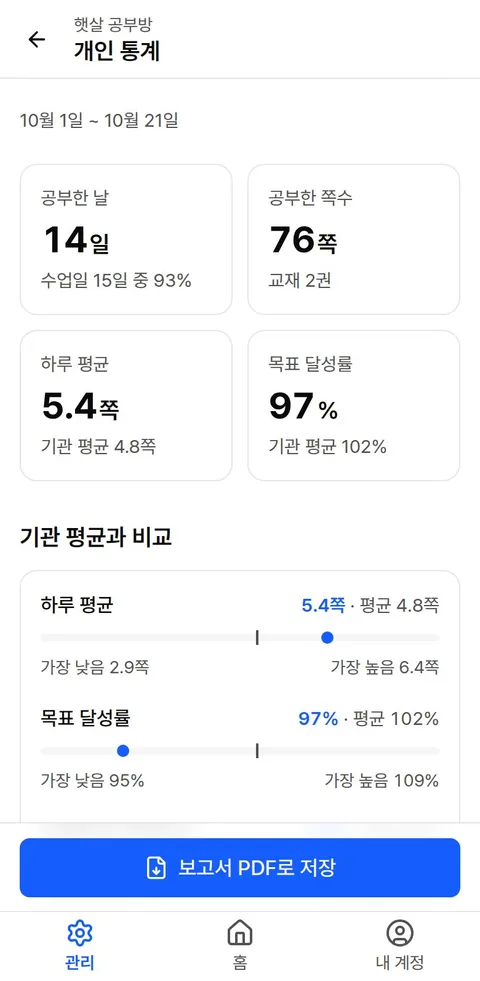
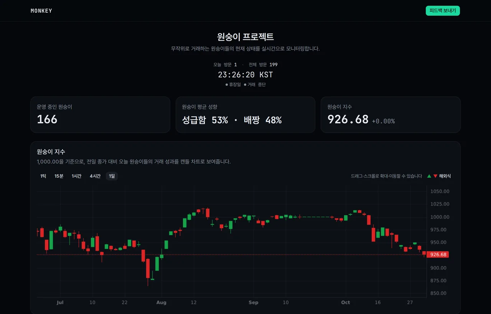
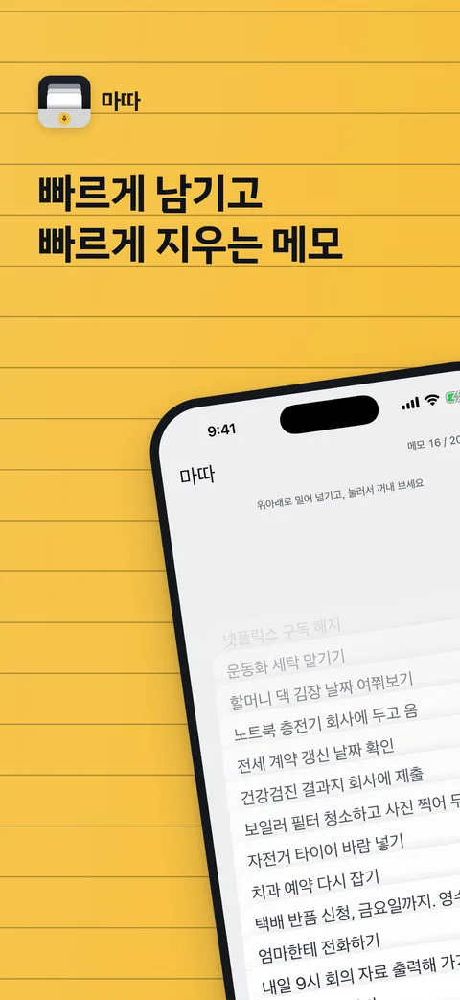
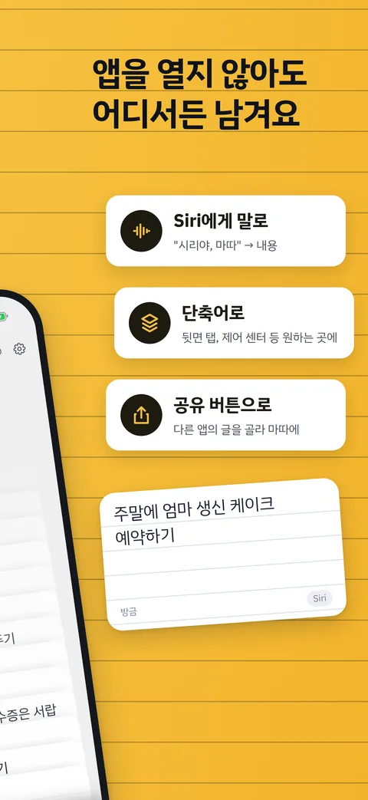
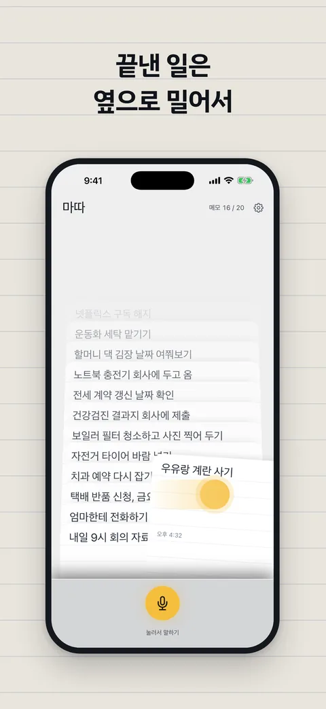

killerwhalee
만들고 운영하는 것들
5
zindo
운영 중선생님이 진도를 적으면, 그 기록이 그대로 학부모에게 보낼 가정통신문이 됩니다.
학원과 공부방이 교실·학생·교재를 등록하고, 선생님은 수업 중에 학생별로 공부한 쪽수와 메모를 남깁니다. 쌓인 기록은 학생별 통계와 인쇄용 가정통신문(PDF)으로 바로 나옵니다.
- 계정 없이 기록 — 선생님은 기관 암호나 QR 코드만으로 들어와 바로 적습니다.
- 교재는 ISBN으로 — 책 검색으로 교재를 찾아 등록합니다.
- 미성년자 개인정보 — 기관 간 데이터 격리, 암호화 백업, 약관·처리방침 버전 관리를 제품의 일부로 다룹니다.
- 40대 이상 기준 크기 — 버튼 48px, 글자 17px. 휴대폰 한 손으로 씁니다.
- 스택
- Django 6 · DRF · PostgreSQL / React · TypeScript · Tailwind · shadcn/ui
- 운영
- 직접 관리하는 서버, Cloudflare Tunnel, 매일 암호화 백업



화면의 기관·학생은 모두 가상 데이터입니다.
monkey
2차 실험 중아무것도 모르는 원숭이가 무작위로 주식을 사고팔면, 몇 마리나 시장을 이길까?
가상의 원숭이 트레이더 수백 마리가 무작위 시각에, 무작위 종목을, 무작위 수량으로 사고팝니다. 가정으로 계산하지 않고 한국투자증권 모의투자 계좌로 실제 한국 시장에 주문을 냅니다.
원숭이마다 성급함(주문 주기)과 배짱(주문 수량) 성향이 있고, 부모의 성향을 물려받아 태어나며, 3거래일 동안 거래가 없으면 죽습니다.
- 스택
- Django 6 · Celery · Channels(WebSocket) · PostgreSQL · Redis / React 19 · TypeScript
- 운영
- 장중 실시간 대시보드, 장 마감 뒤 체결 대사·정비 자동화

1차 실험 · 2026-06-22 ~ 2026-09-23 · 66거래일 · 모의투자 계좌, 실제 돈은 오가지 않습니다
성향은 수익률이 흩어지는 폭만 바꿨고, 순위는 태어난 시점과 극단적인 거래 한두 번이 정했습니다. KOSPI를 크게 앞선 것은 지수의 가중 방식 차이 때문이고, 거래세와 수수료를 빼면 동일가중 시장보다 약 2%p 뒤집니다.
마따 matda
App Store 출시 준비눈 감고도 남기는 초소형 음성 메모.
누워서 불을 끈 채, 폰을 엎어 둔 채 생각난 일을 말로 남깁니다. 나중에 카드처럼 넘겨 보고, 스와이프해서 지웁니다. 쓰는 순간에는 분류도, 날짜도, 알림도 붙이지 않습니다.
- 화면을 보지 않아도 끝까지 — 뒷면 두 번 탭이나 Siri로 시작하고, 시작·저장·실패를 소리와 진동으로 알려 줍니다. 효과음은 직접 녹음했습니다.
- 데이터는 기기 밖으로 나가지 않습니다 — 서버가 없고, 받아쓰기는 기기 안에서, 음성 원본은 저장하지 않습니다.
- Mac 없이 만든 iOS 앱 — GitHub Actions의 macOS에서 빌드해 실기기에 설치하며 개발했습니다.
- 스택
- Swift 6 · SwiftUI · SwiftData · WidgetKit · App Intents · Speech
- 지원
- iOS 18 이상 · 위젯 · 공유 확장 · 단축어



초경량 주문 키오스크
아래에서 바로 써 보기노트북 한 대와 태블릿 몇 대로, 하루짜리 주문 시스템을 바로 엽니다.
후원자 일일 찻집 하루를 위해 만들었습니다. 주문받는 태블릿에서 넣은 주문이 주방별로 나뉘어 각 서빙 담당의 화면에 바로 뜨고, 처리할 때까지 알림음과 깜빡임이 이어집니다.
- 설치할 것은 Node.js 하나 — 외부 패키지, 데이터베이스, 빌드 과정이 없습니다.
- 인터넷 없이 같은 와이파이 안에서 동작합니다. 태블릿에는 앱을 깔지 않고 브라우저로 주소만 엽니다.
- 메뉴·가격·테이블·주방은
config.json파일 하나로 바꿉니다. - 연결이 흔들려도 주문이 두 번 들어가거나 사라지지 않습니다.
주문 입력에서 테이블과 메뉴를 골라 보내면 주방 화면에 바로 나타납니다. 주방 화면은 “시작하기”를 누른 뒤 “주방 요청 → 서빙 완료”로 처리합니다. 이 데모는 서버 없이 이 브라우저 안에서만 돌고, 알림음은 꺼 둔 채로 시작합니다.
PIAST
다시 만드는 중KAIST 피아노 동아리 PIAST의 회원·연주회·레슨·정모를 관리하는 사이트.
동아리 운영을 위해 직접 만든 전용 도구입니다. 지금 운영 중인 것은 PHP로 된 이전 버전이고, React와 Django로 처음부터 다시 만들고 있습니다. 이전 버전에서 할 수 있던 일은 하나도 빠뜨리지 않고, 부원은 휴대폰으로 빠르게 확인하고 신청하게 하는 것이 목표입니다.
- 지금
- PHP 8 · MariaDB · Apache
- 새 버전
- Django 6 · DRF · PostgreSQL / React · Vite · shadcn/ui
- 정모
- 목요일 정기 모임의 회차별 진행과 출석
- 연주회
- 정기·테마 연주회 신청, 테마 투표
- 레슨
- 선생·학생 역할을 잇는 레슨 관리
- 회원
- 기수, 친목조, OB·휴동 상태, 임원 점수
- 임원
- 회장·악장·임원별로 나뉜 관리 메뉴